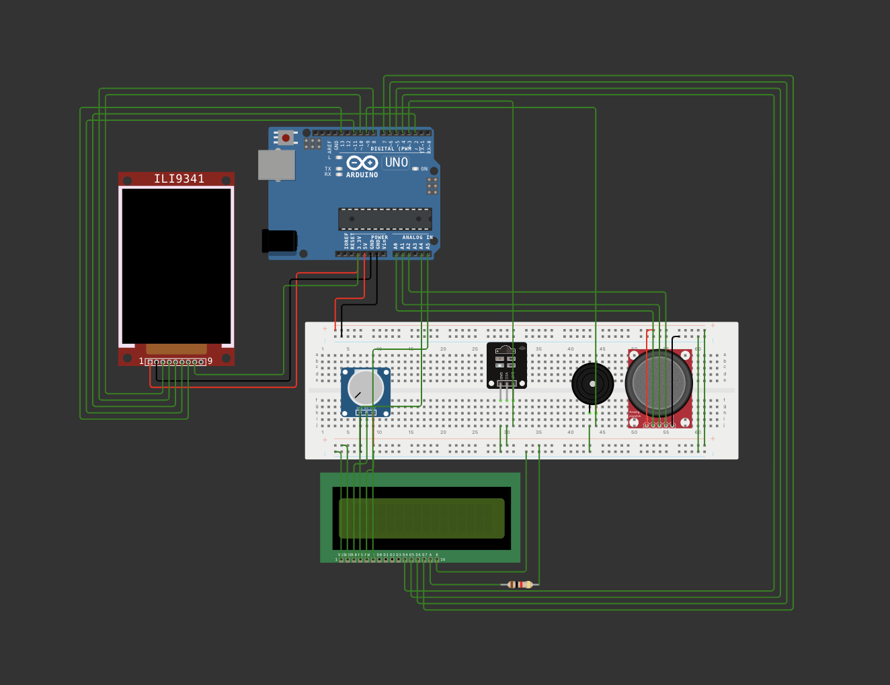

Project
Here, I will talk about my own spin on a game genre called bullet hell. Here is an example. This is a video of one of the most iconic bullet hell games out there, Touhou. You didn't come to see someone else's game though, right? You're here to see mine!
Software Used- AVR Library - Used to interface directly with the ATMega microcontroller bare metal, completely bypassing the Arduino library. Super useful when you want absolute low-level control over the controller. You can control basically everything, ranging from the pin registers to the timers and interrupts.
- Platformio - Tool used for building and flashing C code onto the ATMega.
- Atmega328p (on the Arduino) - The microcontroller that ran the game. Yes, it is technically an Arduino. The reason I am specifiying ATMega is because none of the luxuries of the Arduino library were used here. Everything was coded purely from the AVR library. Basically, from scratch.
- TFT Display (128x128) - The main screen for the game. Another fun one to program when you had no external libraries. Essentially, the biggest challenge was figuring out how to use SPI, and digging through the datasheet to learn how to send bits as SPI commands. One of the greatest joys of this project was finally being able to draw pixels of any color, to any location on the screen.
- Passive Buzzer - Plays all of the music for the game. I found this one really interesting because it sounds exactly like those old arcade game sound effects. To program this one, I essentially had to configure the timer on the ATMega to pulse the pin at specific frequencies in order to mimic a sound frequency. Also, it was surprisingly fun to write the music itself.
- IR remote and receiver. - Remote that I primarily used for pausing/restarting/menu. Probably the most problematic hardware component of this project. This remote uses the NEC transmission protocol, which is a very common protocol. Surprisingly, the hardest part came when the IR remote would just not receive anything for seemingly no reason. After much, much debugging, as well as trial and error, I found that it had to do with the fact that my code was using interrupts to read the signals. Every some amount of microseconds, the microcontroller would use an interrupt service routine (ISR) to pause the currently running process, and read the signal on the IR receiver. This is all good and fine, until you consider the fact that the entire game uses a timerISR in order to synchronize the events of the entire game, as well as all the components. As it turns out, the timerISR has a higher priority than the interrupt used for decoding NEC signals (in my case, at least). Since the timerISR was always running, the NEC decoding almost never triggered at the right time, causing the signal to get corrputed. To fix this issue, I modified timerISR so that it wouldn't hog all the resources, and voila! It finally worked!
- 16x2 LCD Display - Calculator-looking display that I used to display text messages. Honestly, not my favorite piece of hardware since it glitches out so often, but it has its uses.
- Joystick - Main controller for my game. Simple, but very reliable piece of hardware.
Here's a diagram of everything. Sorry about the lack of color-coding the wires.
Here are some videos that I made as progress updates (top is most recent)